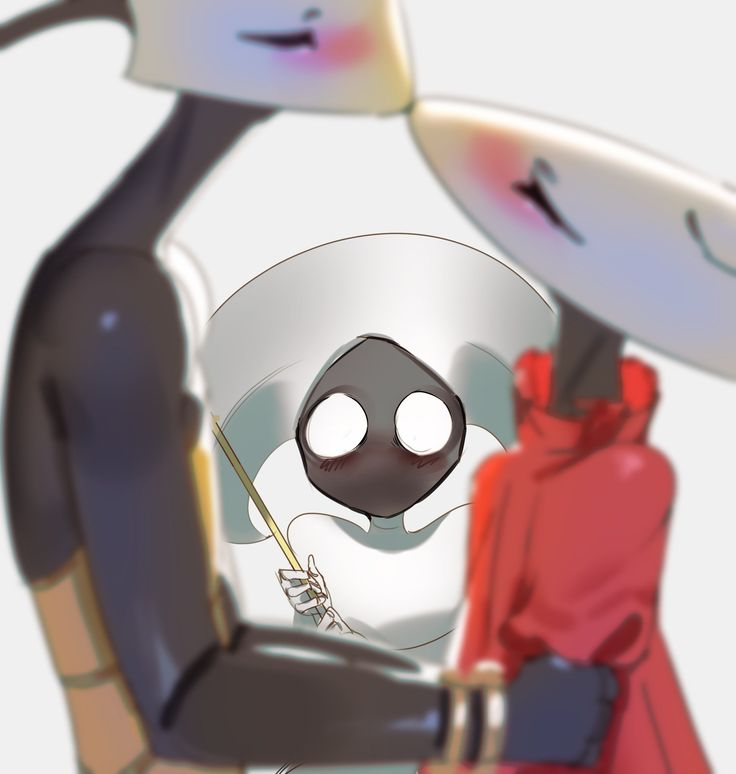

Hollow Knight
Hollow Knight
Hollow Knight é um jogo indie de ação e aventura no estilo Metroidvania desenvolvido e publicado pela Team Cherry. O jogo se passa em Hallownest, um reino subterrâneo caído habitado por insetos e outras criaturas. Os jogadores controlam um cavaleiro sem nome enquanto exploram o vasto mundo interconectado, enfrentando inimigos desafiadores e chefes épicos.
Sinopse
Um cavaleiro misterioso desce até as profundezas de Hallownest, um antigo reino de insetos que já foi próspero mas agora está em ruínas. Guiado por sonhos e uma voz distante, o cavaleiro busca descobrir os segredos deste lugar esquecido, enfrentar criaturas corrompidas pela Infecção e potencialmente salvar (ou destruir) o que resta deste reino moribundo.
A jornada leva o cavaleiro através de cavernas labirínticas, cidades abandonadas, jardins mortais e reinos profundos, onde ele descobrirá a verdade sobre sua própria identidade e o destino trágico de Hallownest.
Jogabilidade
Hollow Knight é um Metroidvania 2D que enfatiza exploração, combate preciso e progressão através de habilidades. O jogador controla o Knight, um pequeno inseto guerreiro armado com um Nail (unha-espada), explorando o mundo interconectado de Hallownest.
Combate
O combate em Hollow Knight é baseado em timing preciso e padrões de ataque. O jogador pode:
• Atacar inimigos com o Nail em quatro direções
• Usar Charms (amuletos) para personalizar habilidades e estatísticas
• Aprender feitiços mágicos como Vengeful Spirit e Shade Soul
• Curar usando Soul (alma) coletada de inimigos derrotados
Exploração
O mundo é vasto e interconectado, recompensando exploração com itens secretos, atalhos e lore escondida. Habilidades como Dash, Wall Jump e Monarch Wings permitem acessar novas áreas anteriormente inacessíveis.
Boss Fights
O jogo é famoso por seus chefes desafiadores e memoráveis. Desde o trágico False Knight até o épico Radiance, cada chefe testa as habilidades do jogador de formas únicas. Alguns dos chefes mais notórios incluem Mantis Lords, Soul Master, Hornet e o devastador Nightmare King Grimm.
História
Hallownest era um próspero reino de insetos governado pelo Pale King. Quando uma antiga força conhecida como Radiance começou a infectar a mente dos habitantes, transformando-os em criaturas zumbis violentas, o reino entrou em colapso.
Para conter a Infecção, o Pale King criou os Vessels - seres vazios sem mente, pensamento ou vontade. O mais "puro" destes Vessels foi escolhido como Hollow Knight e selado no Black Egg Temple junto com a Radiance, servindo como recipiente vivo para aprisioná-la.
Porém, o plano falhou. O Hollow Knight não era tão vazio quanto se pensava, e a Infecção começou a vazar novamente. O Knight, outro Vessel que escapou de Hallownest anos atrás, retorna para confrontar seu destino e potencialmente substituir o Hollow Knight ou destruir a Radiance de uma vez por todas.
Personagens Principais
The Knight
O protagonista silencioso do jogo. Um Vessel criado pelo Pale King, o Knight é pequeno mas determinado. Sua verdadeira natureza e propósito são revelados gradualmente através da história.
Hornet
Uma guerreira ágil que serve como guardiã de Hallownest. Filha do Pale King e da Deepnest's queen Herrah, Hornet confronta o Knight múltiplas vezes para testar sua força e determinação.
The Pale King
O antigo governante de Hallownest, um ser poderoso que trouxe civilização e consciência aos insetos através de sua luz pálida. Suas ações desesperadas para salvar seu reino levaram a consequências trágicas.
The Radiance
Uma antiga deusa-traça que foi esquecida quando o Pale King ascendeu ao poder. Sua raiva e desejo de ser lembrada manifestou-se como a Infecção que destruiu Hallownest.
The Hollow Knight
O Vessel escolhido para aprisionar a Radiance. Acorrentado no Black Egg Temple, sofre eternamente enquanto tenta conter a infecção dentro de si.
O Mundo de Hallownest
Hallownest é dividido em diversas áreas distintas, cada uma com sua própria estética, inimigos e desafios:
Dirtmouth: A vila superficial que serve como hub principal do jogo.
Forgotten Crossroads: As ruínas centrais de Hallownest, conectando a maioria das outras áreas.
Greenpath: Jardins exuberantes e verdes cheios de vida vegetal e insetos pacíficos corrompidos.
City of Tears: A antiga capital de Hallownest, uma cidade majestosa agora abandonada sob chuva perpétua.
Deepnest: Cavernas sombrias e claustrofóbicas infestadas com aranhas e outros horrores.
Crystal Peak: Minas de cristal brilhantes habitadas por mineradores zumbificados.
Kingdom's Edge: Os limites do reino, lar de guerreiros e criaturas perigosas.
Desenvolvimento
Hollow Knight foi desenvolvido pela Team Cherry, um pequeno estúdio indie de Adelaide, Austrália, fundado por Ari Gibson, William Pellen e Jack Vine. O projeto começou com uma campanha no Kickstarter em 2014, buscando AU$35.000 e arrecadando mais de AU$57.000.
O desenvolvimento levou cerca de dois anos e meio, com a equipe trabalhando em tempo integral no jogo. A arte distinta do jogo foi criada por Ari Gibson, enquanto a atmosfera foi amplificada pela trilha sonora emocional de Christopher Larkin.
O jogo foi lançado inicialmente para PC em fevereiro de 2017, recebendo quatro grandes expansões gratuitas de conteúdo: Hidden Dreams, The Grimm Troupe, Lifeblood e Godmaster. Posteriormente foi portado para todas as principais plataformas.
Recepção e Legado
Hollow Knight foi aclamado universalmente pela crítica e jogadores, sendo considerado um dos melhores jogos indie já criados. O jogo vendeu mais de 3 milhões de cópias até 2020.
Críticos elogiaram a direção artística impressionante, a jogabilidade desafiadora mas justa, a trilha sonora atmosférica, a exploração recompensadora e a quantidade massiva de conteúdo pelo preço acessível.
O jogo foi comparado favoravelmente a clássicos do gênero como Super Metroid e Castlevania: Symphony of the Night, sendo frequentemente citado como exemplo definitivo de Metroidvania moderno.
Uma sequência, Hollow Knight: Silksong, está em desenvolvimento, focando em Hornet como protagonista jogável. O anúncio gerou imensa antecipação na comunidade de jogos indie.
"Git gud" tornou-se o mantra não oficial dos fãs de Hollow Knight, encorajando perseverança através dos desafios brutais do jogo.